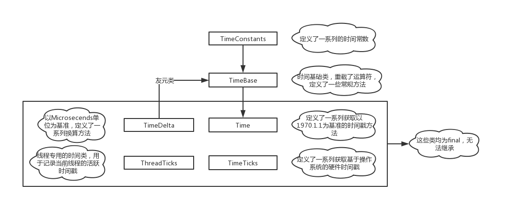

积跬步，行千里，先从最简单的开始写。
这一篇介绍V8中的时间模块，与libuv粗糙的update_loop_time方法不同，V8有一套独立完整的类负责管理时间。
该类位于src/base/platform/time.h，是一个辅助模块，首先来看一下继承树。

整个模块的继承关系比较简单，一般常用的就是Time、TimeTicks类，这里挨个进行介绍吧。
TimeConstants
这个类很直接，只是定义一些常量，比如一星期有7天，一天有24小时，一小时有60分钟等等……
class TimeConstants {
public:
static constexpr int64_t kHoursPerDay = 24;
static constexpr int64_t kMillisecondsPerSecond = 1000;
static constexpr int64_t kMillisecondsPerDay =
kMillisecondsPerSecond * 60 * 60 * kHoursPerDay;
// ...
};
TimeDelta
这个类提供把各种单位的时间转换为microseconds的方法。
class V8_BASE_EXPORT TimeDelta final {
public:
constexpr TimeDelta() : delta_(0) {}
// Converts units of time to TimeDeltas.
static constexpr TimeDelta FromDays(int days) {
return TimeDelta(days * TimeConstants::kMicrosecondsPerDay);
}
// ...
}这里的常数定义来源于上面的TimeConstants类。
TimeBase
这个类没啥好说的，比较特殊的地方就是这是个模版类，提供对给定类型的时间序列化功能。
template <class TimeClass> class TimeBase : public TimeConstants { public: // ... int64_t ToInternalValue() const { return us_; } // ... static TimeClass FromInternalValue(int64_t us) { return TimeClass(us); } protected: explicit constexpr TimeBase(int64_t us) : us_(us) {} // Time value in a microsecond timebase. int64_t us_; };
Time
Time类负责管理JavaScript中Date.now生成的时间戳，用的比较多所以这里就不解释了。
// -----------------------------------------------------------------------------
// Time
//
// This class represents an absolute point in time, internally represented as
// microseconds (s/1,000,000) since 00:00:00 UTC, January 1, 1970.
class V8_BASE_EXPORT Time final : public time_internal::TimeBase<Time> {
// ...
};关于类的介绍，在注释里面都写的很明白了，需要注意的是在不同的操作系统，这些方法的表现天差地别，甚至有些方法仅在指定的操作系统才能生效。
TimeTicks
// -----------------------------------------------------------------------------
// TimeTicks
//
// This class represents an abstract time that is most of the time incrementing
// for use in measuring time durations. It is internally represented in
// microseconds. It can not be converted to a human-readable time, but is
// guaranteed not to decrease (if the user changes the computer clock,
// Time::Now() may actually decrease or jump). But note that TimeTicks may
// "stand still", for example if the computer suspended.
class V8_BASE_EXPORT TimeTicks final : public time_internal::TimeBase<TimeTicks> {
// ...
};注释相当的精细。
TimeTicks这个类则负责另外一种时间戳，在浅析libuv源码-获取精确时间中有进行过介绍。比如在windows中，有两种计数API，分别返回系统"心跳"一次所花时间与"心跳"次数，由于频繁总是固定不变，所以可以根据每次返回的次数来进行计时。
这类事件戳比起上的Time优势在于可以保证数值一直在增加，并且不会受外界因素影响(机器挂了另算)。所以无论是libuv设置轮询开始时间或处理定时器任务，还是V8在对JS代码进行编译计时，都是用的这个。
最后的ThreadTicks就暂时不看了，等到时候用上了再做解释。
这一篇先简单介绍一下，后面再深入讲一讲在不同操作系统下的，两类时间戳的具体实现。